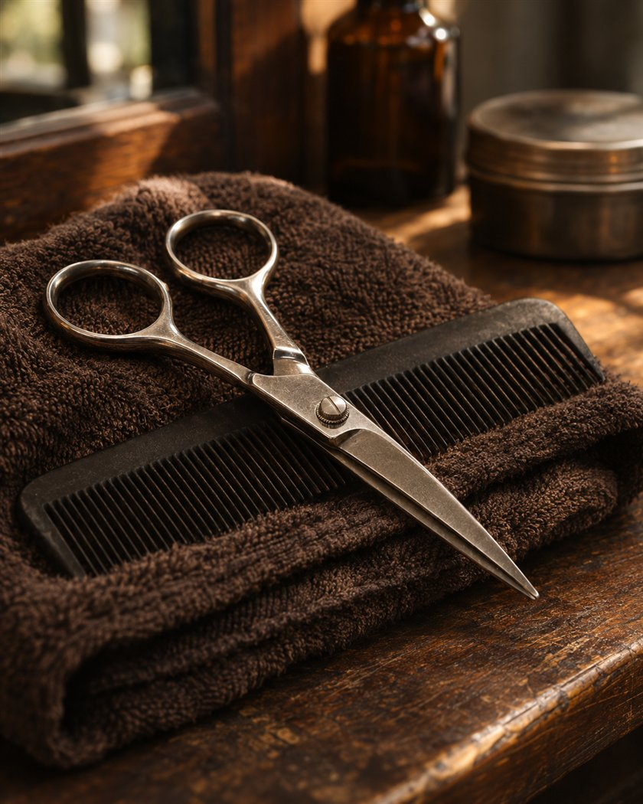
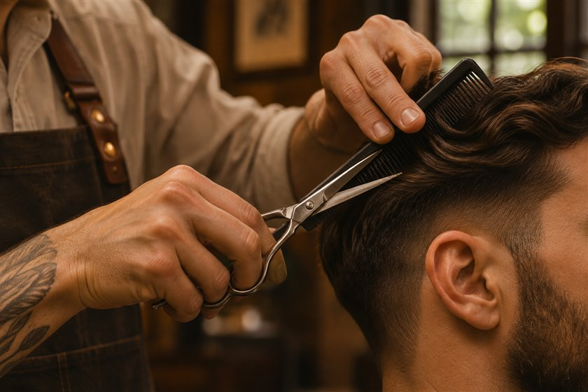
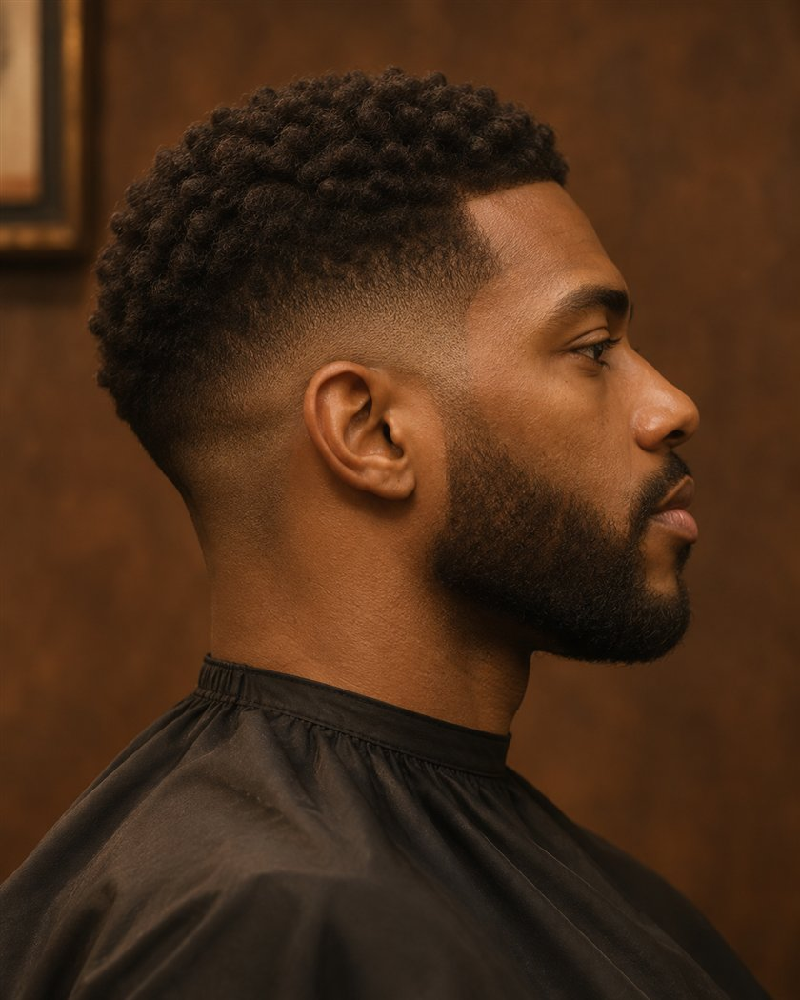
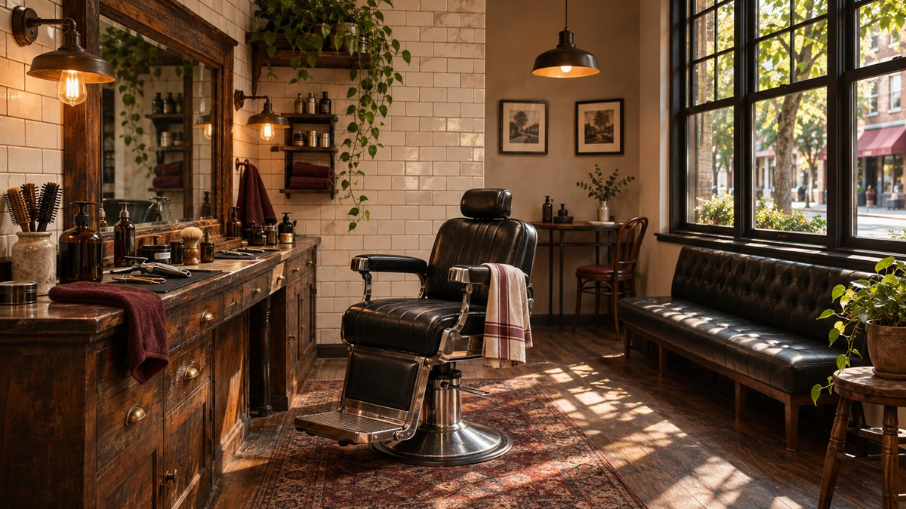
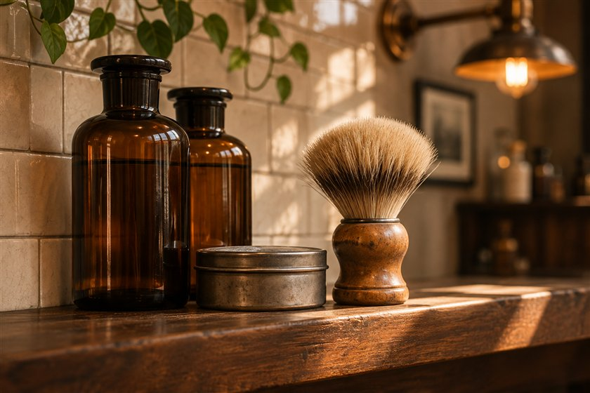
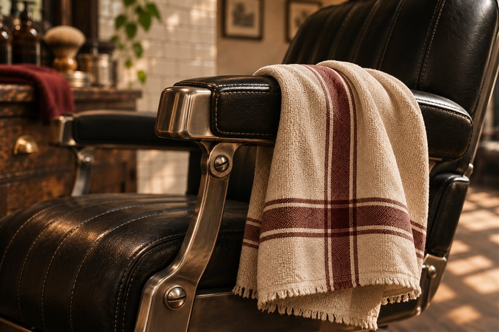
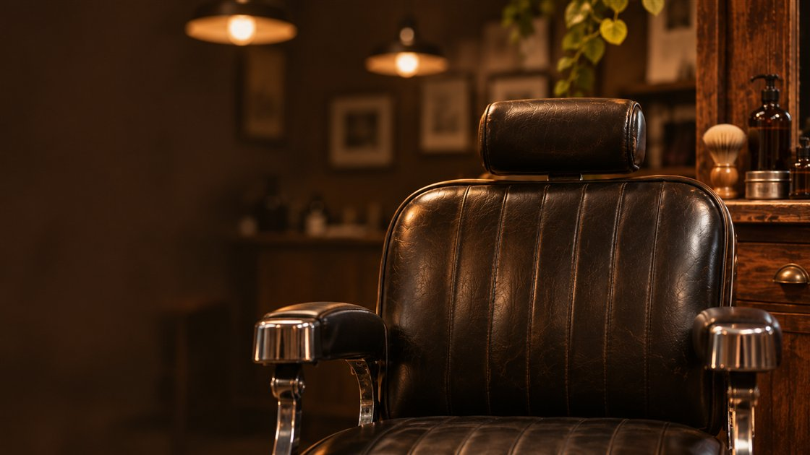

A good cut. Every time.
Request an appointmentThe service menu

- Classic cutA timeless cut, tailored to how you wear it.Select this service
- Skin fadeA clean, close fade with a defined shape on top.Select this service
- Beard trimTidy the edges, shape the beard and keep the length you like.Select this service
- Cut & beardA haircut and beard trim in one sitting.Select this service
The cut starts with a conversation.
Tell us what you like, what gets in the way and how much time you spend styling your hair. We’ll work out a shape that suits how you actually wear it.
Our approach
The Cut Book
Illustrative styles. Find a look that fits.

Meet the barbers
From chair to finish
Talk
Tell us how you wear your hair, what you want to keep, and what you’d like to change.
Cut
Shape the cut around your hair, your routine and the look we’ve agreed on.
Finish
See how it sits, make any final adjustments and talk through styling.
Inside the shop



Your first visit
Do you take walk-ins?
Shop hours and walk-in availability are still to be confirmed for this concept. You can try the appointment preview to see what the request would include.
What should I book?
Choose Classic cut for an all-over reshape, Skin fade for a close fade at the sides, or Beard trim for a beard tidy. Choose Cut & beard if you’d like both.
How should I prepare?
Bring a reference if you have one. A photo from the Cut Book can help you explain the shape, length or finish you like.

Take a seat.
Request an appointmentYour appointment
Choose a service and preview the details for your visit.
Demo only. Your choices stay on this page.